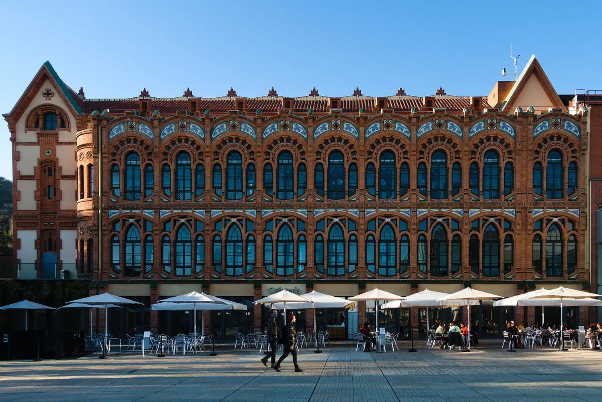

CosmoCaixa
Museo de la ciencia de referencia en Barcelona, con un tramo de bosque amazónico recreado bajo techo, una gran sala dedicada a la evolución del universo y un planetario. Los niños pueden tocar, experimentar y hacer preguntas en un recorrido pensado para despertar curiosidad científica en familia. Cuenta también con un espacio propio para los más pequeños, Clik, y actividades prácticas que cambian según la temporada.
Carrer d'Isaac Newton, 26, 08022 Barcelona Visitar web oficial